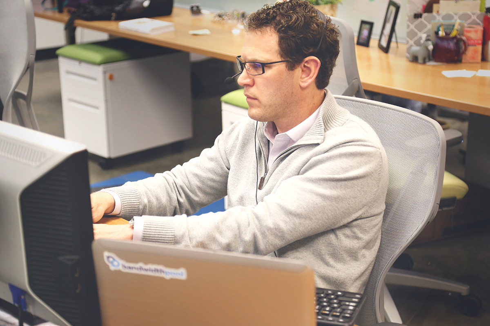
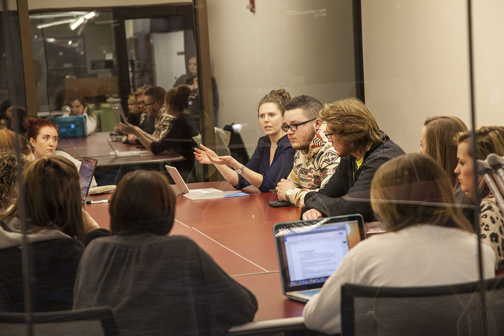

-
Office No.1 in Austin, Texas
-
Senior Editor Niell Lewis

-
Office No.2 in Pasedina, California
-
Junior Photogropher Jessica Sterett and Senior Editor Vanessa Clarke
-
Head staffers plan next expansion

Our Story
In 2003, my brother Thomas and I were both finishing our Bachelors in Business at Penn State. We were a part of a four-person study group that consisted of Allison Murphy, Regan Williams, and us. Allison was a commercial photography major and Regan was finishing her Marketing degree before heading off to graduate school.
One day when we met for lunch Allison approached us with a problem. She told us it nobody would hire her because she didn’t work under a company and even though she charged just a third of any of her competition’s rates. The rest of us were astounded, as her work was always professional and attractive. About a week later, Thomas had a moment of genius.
He pitched to the rest of the group that we create an outlet for amateur photographers to get connected with the clients they need to build their portfolio. By creating a channel of communication for clients on a budget who needed a photographer and a network of amateur photographers across the state, we were able to save people money while getting them professional grade photos at a fraction of the cost.
By combining the first letter of each of our names, we formed T.S.A.R. Photography. In 2004 we realized that was a horrible name and rebranded ourselves to S.T.A.R. Photography. By 2010 we fully expanded our network across the entire United States. Now, in 2017, we have plans to reach out to Canada and other international cities around the globe.
-Steve Wallace